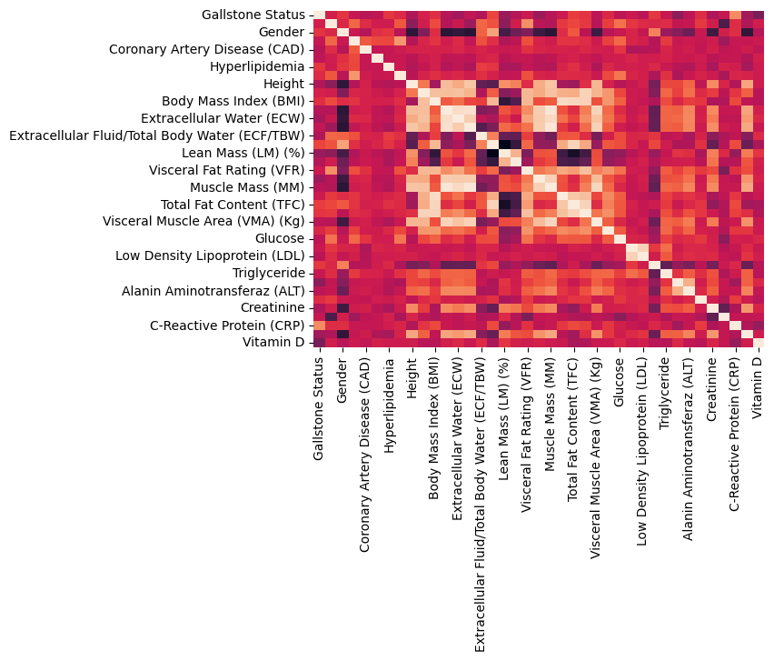
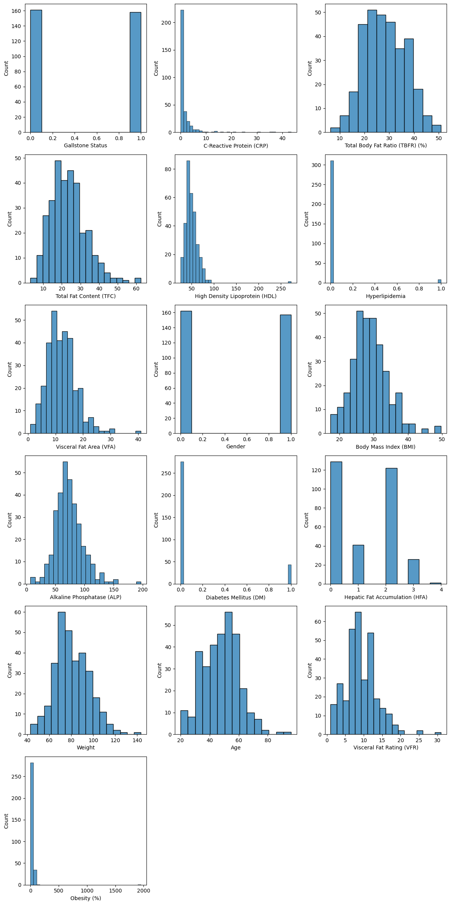
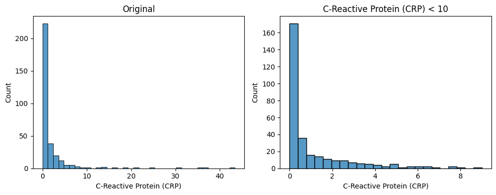
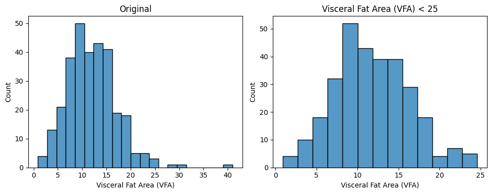
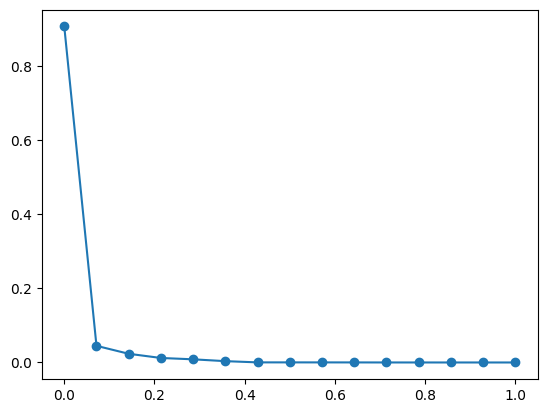
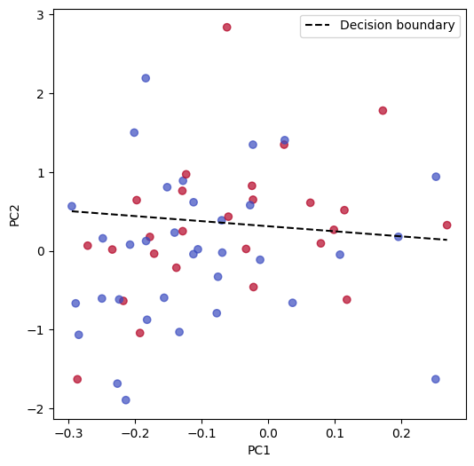

import pandas as pd
import numpy as np
import seaborn as sns
import matplotlib.pyplot as plt02-02: Analisi dataset Gallstone
2. Il dataset qui a fianco proviene dall’UCI ML laboratory https://archive.ics.uci.edu/dataset/1150/gallstone-1
Il dataset clinico è stato raccolto presso l’Ambulatorio di Medicina Interna dell’Ospedale Ankara VM Medical Park e include dati di 319 individui (giugno 2022 – giugno 2023), di cui 161 con diagnosi di calcolosi biliare. Esso contiene 38 variabili, tra cui dati demografici, di bioimpedenza e di laboratorio, ed è stato approvato eticamente dal Comitato Etico dell’Ospedale della Città di Ankara (E2-23-4632). Le variabili demografiche comprendono età, sesso, altezza, peso e BMI. I dati di bioimpedenza includono acqua totale, extracellulare e intracellulare, massa muscolare e grassa, proteine, area del grasso viscerale e grasso epatico. Le variabili di laboratorio comprendono glucosio, colesterolo totale, HDL, LDL, trigliceridi, AST, ALT, ALP, creatinina, GFR, PCR, emoglobina e vitamina D. Il dataset è completo, senza valori mancanti, ed è bilanciato rispetto alla presenza della malattia, eliminando la necessità di ulteriori fasi di pre-processing. Fornisce una solida base per la previsione della calcolosi biliare tramite modelli di machine learning basati su caratteristiche non derivanti da imaging.
base = pd.read_excel("inml25tst02.xlsx", sheet_name="Es 2")
df = base.drop(columns=base.columns[:9]).set_index("id").sort_index()df.head(1)| Gallstone Status | Age | Gender | Comorbidity | Coronary Artery Disease (CAD) | Hypothyroidism | Hyperlipidemia | Diabetes Mellitus (DM) | Height | Weight | ... | High Density Lipoprotein (HDL) | Triglyceride | Aspartat Aminotransferaz (AST) | Alanin Aminotransferaz (ALT) | Alkaline Phosphatase (ALP) | Creatinine | Glomerular Filtration Rate (GFR) | C-Reactive Protein (CRP) | Hemoglobin (HGB) | Vitamin D | |
|---|---|---|---|---|---|---|---|---|---|---|---|---|---|---|---|---|---|---|---|---|---|
| id | |||||||||||||||||||||
| 1 | 0 | 50 | 0 | 0 | 0 | 0 | 0 | 0 | 185 | 92.8 | ... | 40.0 | 134.0 | 20.0 | 22.0 | 87.0 | 0.82 | 112.47 | 0.0 | 16.0 | 33.0 |
1 rows × 39 columns
Correlazione tra input e output
2.1 Siccome le variabili sono tante, vorremmo concentrarci su quelle che sono più correlate a quella di output, Gallstone Status. Calcolare la correlazione di ciascuna variabile con quella di output, ed elencare le 15 variabili più correlate.
Siccome non abbiamo ancora verificato la distribuzione delle variabili, è meglio usare la correlazione di Spearman, invece della solita correlazione lineare (di Pearson). Questa si ottiene calcolando la correlazione di lineare dopo aver sostituito i valori della variabile con i ranghi associati a quei valori, quindi 1 al posto del valore più piccolo, 2 al posto del secondo più piccolo, e così via.
spearman_corr = df.corr(method="spearman")
sns.heatmap(spearman_corr, cbar=False)
plt.show()
k = 15
top_k_features = spearman_corr["Gallstone Status"].sort_values()[::-1][:k+1]
top_k_featuresGallstone Status 1.000000
C-Reactive Protein (CRP) 0.520192
Total Body Fat Ratio (TBFR) (%) 0.227616
Total Fat Content (TFC) 0.192926
High Density Lipoprotein (HDL) 0.174959
Hyperlipidemia 0.161901
Visceral Fat Area (VFA) 0.156637
Gender 0.153483
Body Mass Index (BMI) 0.121131
Alkaline Phosphatase (ALP) 0.114235
Diabetes Mellitus (DM) 0.104689
Hepatic Fat Accumulation (HFA) 0.093444
Weight 0.051167
Age 0.042643
Visceral Fat Rating (VFR) -0.000546
Obesity (%) -0.003132
Name: Gallstone Status, dtype: float64features_list = list(top_k_features.index)
features_list['Gallstone Status',
'C-Reactive Protein (CRP)',
'Total Body Fat Ratio (TBFR) (%)',
'Total Fat Content (TFC)',
'High Density Lipoprotein (HDL)',
'Hyperlipidemia',
'Visceral Fat Area (VFA)',
'Gender',
'Body Mass Index (BMI)',
'Alkaline Phosphatase (ALP)',
'Diabetes Mellitus (DM)',
'Hepatic Fat Accumulation (HFA)',
'Weight',
'Age',
'Visceral Fat Rating (VFR)',
'Obesity (%)']Preprocessing
2.2 Studiare la distribuzione delle 15 variabili trovate sopra, sia univariata, sia bivariata, alla ricerca di outliers e altri difetti. Si scelgano opportune trasformazioni per facilitare questo compito e per ottenere migliori risultati negli esercizi seguenti.
X_selected = df[features_list]
X_filtered = X_selected
X_filtered.head()| Gallstone Status | C-Reactive Protein (CRP) | Total Body Fat Ratio (TBFR) (%) | Total Fat Content (TFC) | High Density Lipoprotein (HDL) | Hyperlipidemia | Visceral Fat Area (VFA) | Gender | Body Mass Index (BMI) | Alkaline Phosphatase (ALP) | Diabetes Mellitus (DM) | Hepatic Fat Accumulation (HFA) | Weight | Age | Visceral Fat Rating (VFR) | Obesity (%) | |
|---|---|---|---|---|---|---|---|---|---|---|---|---|---|---|---|---|
| id | ||||||||||||||||
| 1 | 0 | 0.0 | 19.2 | 17.8 | 40.0 | 0 | 10.6 | 0 | 27.1 | 87.0 | 0 | 0 | 92.8 | 50 | 9 | 23.4 |
| 2 | 0 | 0.0 | 32.8 | 31.0 | 43.0 | 0 | 18.4 | 0 | 30.5 | 46.0 | 0 | 0 | 94.5 | 47 | 15 | 38.8 |
| 3 | 0 | 0.0 | 27.3 | 24.9 | 43.0 | 0 | 16.2 | 0 | 31.2 | 66.0 | 0 | 0 | 91.1 | 61 | 15 | 41.7 |
| 4 | 0 | 0.0 | 15.8 | 10.7 | 59.0 | 0 | 6.5 | 0 | 24.0 | 34.0 | 0 | 1 | 67.7 | 41 | 6 | 9.0 |
| 5 | 0 | 0.0 | 20.0 | 17.9 | 30.0 | 0 | 10.4 | 0 | 28.3 | 71.0 | 0 | 2 | 89.6 | 42 | 8 | 28.6 |
n_cols = 3
n_rows = int(np.ceil(len(X_selected.columns) / n_cols))
fig, axes = plt.subplots(n_rows, n_cols, figsize=(12, 4*n_rows))
axes = axes.flatten()
for ax, feature in zip(axes, X_selected.columns):
sns.histplot(X_selected[feature], ax=ax)
# rimuove eventuali subplot vuoti in fondo
for ax in axes[len(X_selected.columns):]:
ax.remove()
plt.tight_layout()
plt.show()
Eliminazione di outlier
def check_outliers(df, column, value, op="<"):
fig, axes = plt.subplots(1, 2, figsize=(10, 4))
sns.histplot(df[column], ax=axes[0])
axes[0].set_title("Original")
if op == "<":
mask = df[column] < value
elif op == ">":
mask = df[column] > value
else:
raise ValueError("mode must be '<' or '>'")
inliers = df.loc[mask, column]
sns.histplot(inliers, ax=axes[1])
axes[1].set_title(f"{column} {op} {value}")
plt.tight_layout()
plt.show()
print(f"Samples before filter: {df.shape[0]}")
print(f"Samples after filter: {inliers.shape[0]}")
print(f"Outliers found: {df.shape[0] - inliers.shape[0]}")
return df.shape[0] - inliers.shape[0]total_outliers = 0#X["C-Reactive Protein (CRP)"]
column = "C-Reactive Protein (CRP)"
value = 10
op = "<" # < / >
outliers = check_outliers(X_filtered, column, value, op)
total_outliers += outliers
X_filtered = X_filtered[X_filtered[column] < value] # apply filter
Samples before filter: 319
Samples after filter: 307
Outliers found: 12#X["High Density Lipoprotein (HDL)"]
column = "High Density Lipoprotein (HDL)"
value = 80
op = "<" # < / >
outliers = check_outliers(X_filtered, column, value, op)
total_outliers += outliers
X_filtered = X_filtered[X_filtered[column] < value] # apply filter
Samples before filter: 307
Samples after filter: 303
Outliers found: 4#X["Visceral Fat Area (VFA)"]
column = "Visceral Fat Area (VFA)"
value = 25
op = "<" # < / >
outliers = check_outliers(X_filtered, column, value, op)
total_outliers += outliers
X_filtered = X_filtered[X_filtered[column] < value] # apply filter
Samples before filter: 303
Samples after filter: 300
Outliers found: 3print(f"Outliers found: {total_outliers}")
print(f"Original shape: {X_selected.shape}")
print(f"Filtered shape: {X_filtered.shape}")Outliers found: 19
Original shape: (319, 16)
Filtered shape: (300, 16)Principal Component Analysis
2.3 Eseguire una PCA delle variabili da L in poi, usando le versioni trasformate più regolari per quelle che si sono modificate al punto precedente. Quante componenti conviene tenere?
from sklearn.decomposition import PCAX = X_filtered.drop(columns=["Gallstone Status"])
y = X_filtered["Gallstone Status"]
print(X.shape)
print(y.shape)(300, 15)
(300,)X = X - X.mean()pca = PCA()
pca.fit(X)PCA()In a Jupyter environment, please rerun this cell to show the HTML representation or trust the notebook.
On GitHub, the HTML representation is unable to render, please try loading this page with nbviewer.org.
Parameters
evr_x = np.linspace(0,1, X.shape[1])
evr_y = pca.explained_variance_ratio_
plt.plot(evr_x,evr_y)
plt.scatter(evr_x, evr_y)
plt.show()
thr = 0.95
summ = 0
n_components = 0
for v_ratio in pca.explained_variance_ratio_:
summ += v_ratio
n_components += 1
if summ >= thr: break
print(summ)
print(n_components)0.9512950039186561
2Logistic Regression
2.4 Si usino le componenti ridotte, ottenute con la PCA, per prevedere la variabile di output, Gallstone Status. È richiesto di usare qualche tecnica di validazione per stimare l’accuratezza del metodo.
from sklearn.linear_model import LogisticRegression
from sklearn.model_selection import train_test_split
from sklearn.metrics import accuracy_scoreX_train, X_test, y_train, y_test = train_test_split(X, y, test_size=0.2)pca = PCA(n_components=n_components)
X_train = pca.fit_transform(X_train)
X_test = pca.transform(X_test)mean = np.mean(X_train, axis=0)
std = np.std(X_train, ddof=1, axis=0)
X_train = (X_train - mean) / std
X_test = (X_test - mean) / stdmodel = LogisticRegression()
model.fit(X_train, y_train)LogisticRegression()In a Jupyter environment, please rerun this cell to show the HTML representation or trust the notebook.
On GitHub, the HTML representation is unable to render, please try loading this page with nbviewer.org.
Parameters
predictions = model.predict(X_test)acc = accuracy_score(predictions, y_test)
print(f"Accuracy: {acc}")Accuracy: 0.6plt.figure(figsize=(6,6))
plt.scatter(X_test[:, 0], X_test[:, 1], c=y_test, cmap="coolwarm", alpha=0.7)
plt.xlabel("PC1")
plt.ylabel("PC2")
# retta di decisione
w1, w2 = model.coef_[0]
b = model.intercept_[0]
x_vals = np.linspace(X_test[:, 0].min(), X_test[:, 0].max(), 200)
y_vals = -(w1 * x_vals + b) / w2
plt.plot(x_vals, y_vals, 'k--', label="Decision boundary")
plt.legend()
plt.show()